정보보안기사 (2017-03-25 기출문제)
1과목: 시스템 보안
1. 다음 중 운영체제와 무관하게 매크로 기능이 있는 MS 오피스 제품과 같은 프로그램을 통해 활동하는 컴퓨터 바이러스에 해당하는 것은?
- 매크로(Macro) 바이러스
- 다형성(Polymorphic) 바이러스
- 은폐형(Stealth) 바이러스
- 암호형(Encryption) 바이러스
(정답률: 89%)

2. chmod 명령어 실행 후의 파일 test1의 허기비트(8진법 표현)는?
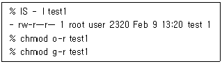
- 644
- 244
- 600
- 640
(정답률: 73%)
3. 다음 설명 중 가장 옳지 않은 것은?
- 리눅스 시스템에서는 계정 목록을 /etc/passwd 파일에 저장하고 있다.
- 일반 사용자의 사용자 번호(UID, User ID)는 0번으로 부여받게 된다.
- 디렉토리의 권한은 특수권한, 파일 소유자 권한, 그룹 권한, 일반(Others) 권한으로 구분된다.
- 접근 권한이 rwxr-xr-x인 경우 고유한 숫자로 표기하면 755가 된다.
(정답률: 69%)
4. 다음 지문이 설명하는 데이터베이스 보안유형은 무엇인가?
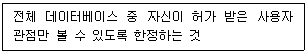
- Access Control
- Encryption
- Views
- Authorization Rules
(정답률: 71%)
5. 다음 중 동작 계층이 다른 하나는?
- S/MIME
- PGP
- S-HTTP
- SSL
(정답률: 65%)
6. ㉠, ㉡에 해당하는 보안도구로 적절한 것은?
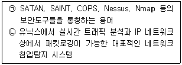
- ㉠ 취약점 점검도구, ㉡ Snort
- ㉠ 도칭 도구, ㉡ SNMP
- ㉠ 침입 탐지 도구, ㉡ SNMP
- ㉠ 무결성 검증 도구, ㉡ Snort
(정답률: 88%)
7. 디스크 공간 할당의 논리적 단위는?
- Volume
- Page
- Cluster
- Stream
(정답률: 77%)
8. 비선점형 스케줄링만 고르 것은?
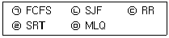
- ㉠, ㉡
- ㉠, ㉢
- ㉠, ㉣
- ㉢, ㉤
(정답률: 42%)
9. 도메인을 탈취하거나 도메인 네임 시스템 또는 프록시 서버의 주소를 변조함으로써 사용자들로 하여금 진짜 사이트로 오인해 접속하도록 유도한 뒤, 개인 정보를 탈취하는 해킹 기법은?
- 피싱
- 파밍
- 스미싱
- 봇넷
(정답률: 70%)
10. 특정 조건이 만족될 때까지 잠복하고 있다가 조건이 만족되면 트리거 되어 해커가 원하는 동작을 실행하는 공격방법은?
- 트로이 목마
- 키로거
- 논리 폭탄
- 백도어 (Backdoor)
(정답률: 77%)
11. 최근 APT공격이 지속적으로 발생하고 있다. 다음 사례에서 공통된 내용은 무엇인가?
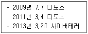
- DBMS 파괴
- Ddos 공격
- 홈페이지 변조
- 마스터부트레코더(MBR) 파괴
(정답률: 42%)
12. 공격의 종류가 적절하게 짝지어진 것은?
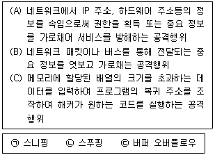
- (A) : ㉠, (B) : ㉡, (C) : ㉢
- (A) : ㉡, (B) : ㉢, (C) : ㉠
- (A) : ㉡, (B) : ㉠, (C) : ㉢
- (A) : ㉢, (B) : ㉠, (C) : ㉡
(정답률: 84%)
13. 가장 부적절한 행위는?
- 주요 개인정보는 암호화하여 저장하고 관련 키는 별도 백업하여 관리한다.
- /etc/passwd 파일의 변경은 자주 발생하기 때문에 무결성 점검은 의미가 없고 /etc/shadow 파일만 무결성 점검도구로 관리하면 된다.
- 커널로그, Cron 로그 등은 접근통제를 위한 모니터링 대상으로 내용 및 퍼미션 등을 주기적으로 확인한다.
- 웹 서버의 환경설정 파일은 주기적으로 백업받고, 무결성 점검도구를 통해 변경 유무를 확인한다.
(정답률: 86%)
14. 적절하게 고른 것은?
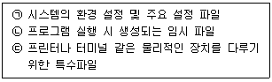
- ㉠ /usr, ㉡ /temp, ㉢ /dev
- ㉠ /usr, ㉡ /tmp, ㉢ /var
- ㉠ /etc, ㉡ /temp, ㉢ /var
- ㉠ /etc, ㉡ /tmp, ㉢ /dev
(정답률: 77%)
15. 파일 업로드 공격에 관한 설명과 가장 거리가 먼 것은?
- 공격자가 웹 서버 쪽에 업로드한 파일을 실행시키는 형태로 공격이 이루어진다.
- 업로드 된 파일에 대해 실행 속성을 제거함으로써 피해를 방지할 수 있다.
- 화이트리스트 방식으로 허용된 확장자를 갖는 파일에 대해서만 업로드를 허용함으로써 공격을 방지할 수 있다.
- 업로드 파일의 저장 경로를 '웹문서 루트'안으로 제한함으로써 공격자의 접근을 차단한다.
(정답률: 66%)
16. 실행 레벨을 적절하게 고른 것은?
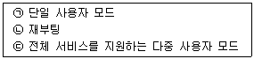
- ㉠ 실행레벨 1, ㉡ 실행레벨 6, ㉢ 실행레벨 3
- ㉠ 실행레벨 0, ㉡ 실행레벨 5, ㉢ 실행레벨 3
- ㉠ 실행레벨 3, ㉡ 실행레벨 6, ㉢ 실행레벨 2
- ㉠ 실행레벨 0, ㉡ 실행레벨 5, ㉢ 실행레벨 3
(정답률: 79%)
17. 다음 보기의 보안 지침 중 옳은 내용을 모두 고른 것은?
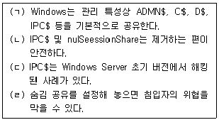
- (ㄱ), (ㄷ)
- (ㄱ), (ㄴ), (ㄷ)
- (ㄱ), (ㄹ)
- (ㄷ), (ㄹ)
(정답률: 29%)
18. 분산 처리 시스템에 대한 설명으로 틀린 것은?
- 목적은 자원의 공유, 연상 속도의 향상, 신뢰성과 컴퓨터 통신 등에 있다.
- 분산된 컴퓨터 간의 자원을 이용자가 쉽게 공유하여 액세스할 수 있다.
- 시스템의 설계가 간단하여 확장이 용이하고 보안성을 향상시킬 수 있다.
- 분산 운영체제는 시스템의 자원을 효율적으로 관리하기 위한 운영체제이다.
(정답률: 72%)
19. 인적자원 관리자가 특정 부서 사용자들에게 같은 직무를 수행할 수 있는 접근 권한을 할당하고 있다. 이것은 다음 중 어느 것이 예인가?
- 역할기반 접근 통제
- 규칙기반 접근 통제
- 중앙집중식 접근 통제
- 강제적 접근 통제
(정답률: 73%)
20. 형식에 대한 매개변수를 적절하게 고른 것은?
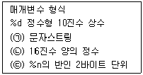
- ㉠ %s, ㉡ %o, ㉢ %If
- ㉠ %s, ㉡ %x, ㉢ %hn
- ㉠ %c, ㉡ %x, ㉢ %hn
- ㉠ %c, ㉡ %o, ㉢ %If
(정답률: 77%)
2과목: 네트워크 보안
21. IDS의 동작 순서를 바르게 나열한 것은?
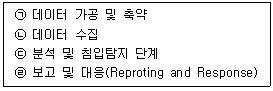
- ㉠ - ㉡ - ㉢ - ㉣
- ㉡ - ㉠ - ㉢ - ㉣
- ㉡ - ㉢ - ㉠ - ㉣
- ㉡ - ㉢ - ㉣ - ㉠
(정답률: 67%)
22. 스위치 장비가 동작하는 방식 중 전체 프레임을 모두 받고 오류 검출 후 전달하는 방식은?
- Cut - through 방식
- Fragment - Free 방식
- Stored and Forwading 방식
- Direct Switching 방식
(정답률: 59%)
23. 정적 라우팅에 대한 다음 설명 중 가장 부적절한 것은?
- 관리자가 수동으로 테이블에 각 목적지에 대한 경로를 입력한다.
- 라우팅 경로가 고정되어 있는 네트워크에 적용하면 라우터의 직접적인 처리 부하가 감소한다.
- 보안이 중요한 네트워크 인 경우 정적 라우팅을 선호하지 않는다.
- 네트워크 환경 변화에 능동적인 대처가 어렵다.
(정답률: 62%)
24. VPN 구현 기술과 가장 거리가 먼 것은?
- 터널링
- 패킷 필터링
- 인증
- 암호화
(정답률: 66%)
25. 암호가 걸려 해당 자료들을 열지 못하게 하는공격을 의미하는 것은?
- Ransomware
- DRDos
- Stuxnet
- APT
(정답률: 64%)
26. ㉠ ~ ㉢에 들어가야 할 단어로 적절 한 것은?
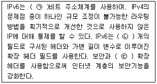
- ㉠ 128, ㉡ 8, ㉢ 인증
- ㉠ 128, ㉡ 4, ㉢ 인식
- ㉠ 64, ㉡ 8, ㉢ 인식
- ㉠ 64, ㉡ 4, ㉢ 인증
(정답률: 82%)
27. I/O 중심 프로세스와 CPU 중심 프로세스 모두를 만족시카는 스케줄러로 가장 적합한 것은?
- MLFQ(Multi Level Feedback Queue)
- RR(Round Robin)
- SPF(Shortest Process First)
- SRT(Shortest Remaining Time)
(정답률: 57%)
28. 다음 지문이 설명하는 것은?
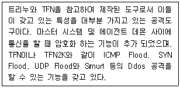
- Stacheldraht
- Targa
- Bonk
- Boink
(정답률: 54%)
29. 무선망에서의 공개키 기반 구조를 의미하는 것은?
- WPKI
- WML
- WTLS
- WIPI
(정답률: 75%)
30. 라모트 컴퓨터로부터의 ping 영렁에 대한 응답으로 "Destination Unreachable"을 되돌려 주고, 접속을 거절하기 위해 라눅스 방화벽에서 설정하는 타깃 명령어는 무엇인가?
- DROP
- DENY
- REJECT
- RETURN
(정답률: 47%)
31. 다음 질문에서 설명하고 있는 것은?
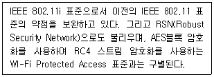
- WEP
- WPA2
- EAP-TLS
- WAP
(정답률: 80%)
32. (A). (B)에 들어갈 용어를 바르게 짝지은 것은?
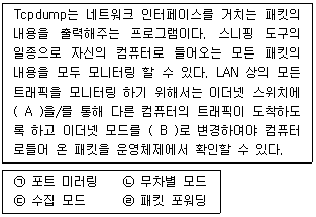
- (A) : ㉠, (B) : ㉡
- (A) : ㉠, (B) : ㉢
- (A) : ㉣, (B) : ㉡
- (A) : ㉣, (B) : ㉢
(정답률: 65%)
33. 다음 보기가 설명하는 공격은?
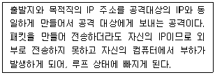
- Land 공격
- Targa 공격
- Ping of Death 공격
- Smurf 공격
(정답률: 58%)
34. 지문의 특성을 갖는 공격 방법은 무엇인가?
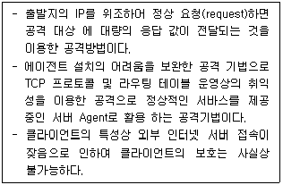
- Botnet
- DRDoS
- APT
- Sniffing
(정답률: 62%)
35. 크롤러로부터 사이트를 제어하기 위해서 사용하는 파일은?
- crawler.txt
- access.conf
- httpd.conf
- robots.txt
(정답률: 46%)
36. 다음 그림에서 설명하고 있는 포트 스캔은 무엇인가?
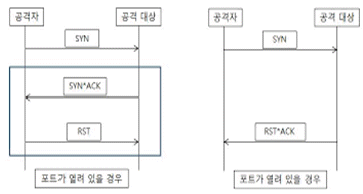
- TCP Open 스캔
- TCP Half Open 스캔
- TCP 단편화 (fragementation) 스캔
- TCP FIN 스캔
(정답률: 45%)
37. 다음 설명에 해당하는 시스템은?
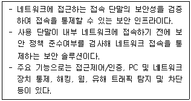
- NAC(Network Access Control)
- ESM(Enterprise Security Management)
- SIEM(Security Information Event Management)
- APT(Advanced Persistent Threat)
(정답률: 72%)
38. 다음 중 스위치 환경에서의 스니핑 공격 유형이 아닌 것은?
- ARP Injection
- Switch Jamming
- ARP Redirect
- ARP Spoofing
(정답률: 49%)
39. Session Hijacking에 대한 설명으로 올바르지 않은 것은?
- 세션을 Brute-Force guessing을 통해 도용하거나 가로채어 자신이 원하는 데이터를 보낼 수 있는 공격방법이다.
- 이미 인증을 받아 세션을 생성, 유지하고 있는 연결을 빼앗는 공격을 총칭한다.
- 데이터 처리율을 감소시키고 서버가 정상 상태로 회복될때까지 대기 상태에 빠지게 한다.
- TCP의 세션을 끊고 순서번호(Sequence Number)를 새로 생성하여 세션을 빼앗고 인증을 회피한다.
(정답률: 56%)
40. 다음 설명으로 알맞은 명령어는?
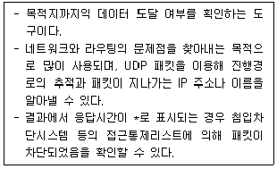
- Ping
- Traceroute
- Tcpdump
- Netstat
(정답률: 76%)
3과목: 어플리케이션 보안
41. HTTP의 요청 메소드가 아닌 것은?
- GET
- POST
- PUSH
- PUT
(정답률: 52%)
42. 다음 ㉠, ㉡에 들어갈 단어로 적절 한 것은?
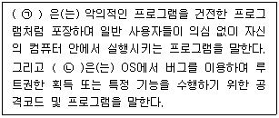
- ㉠ Trojan, ㉡ Sniffer
- ㉠ Trojan, ㉡ Exploit
- ㉠ Worm, ㉡ Sniffer
- ㉠ Worm, ㉡ Exploit
(정답률: 79%)
43. 전자메일의 실제 발송자를 추적하기 위해 사용되는 메일헤더의 항목은?
- Message-ID
- Content-Type
- From
- Received
(정답률: 33%)
44. HTTP 응답 상태코드 기술이 잘못된 것은?
- 200 - OK
- 403 - Bad Gateway
- 404 - Not Found
- 500 - Internal Server Error
(정답률: 50%)
45. 다음은 HTTP 접속 시 노출되는 URL의 예를 보여주고 있다. URL에 보이는 메타문자를 잘못 해석한 것은?
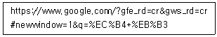
- ? : URL 과 파라미터 구분자
- = : 파라미터 대입 연산자
- % : HEX 값 표현에 사용
- + : 파라미터 구분자
(정답률: 54%)
46. FTP 바운스 공격의 주요 목적은?
- 무작위 공격
- IP 스푸핑
- 포트 스캐닝
- 스위치 재밍
(정답률: 56%)
47. 다음 OTP 토큰에 대한 설명으로 적절하지 않은 것은?
- OTP 자체 생성할 수 있는 연산기능과 암호 알고리즘 등을 내장한 별도의 단말기이다.
- 외형은 USB 메모리와 비슷하다.
- 토큰은 별도로 구매해야 한다.
- 서버가 OTP 정보를 SMS로 전송하고 사용자는 이 정보를 이용한다.
(정답률: 67%)
48. DNS Cache를 확인하는 윈도우 명령어는?
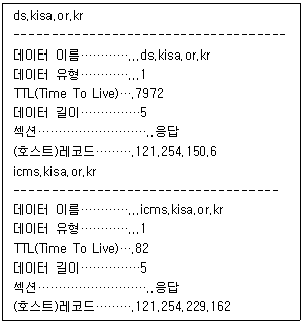
- ipconfig/ dnsdisplay
- ipconfig/ displaydns
- ipconfig/ flushdns
- ipconig/ dnsflush
(정답률: 70%)
49. 다음 중 E-mail 전송 시 보안성을 제공하기 위한 보안 전자 우편 시스템이 아닌 것은?
- PGP
- S/MIME
- PEM
- SSL
(정답률: 71%)
50. HTTP 메소드(method)는?
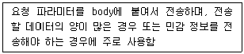
- HEAD
- GET
- TRACE
- POST
(정답률: 63%)
51. 다음 지문은 무엇을 설명한 것인가?
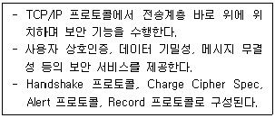
- IPSec
- PGP
- SSL/TLS
- SHTTP
(정답률: 76%)
52. 콘텐츠를 메타데이터와 함께 시큐어 컨테이너 포맷 구조로 만드는 묘듈은?
- 패키지
- DRM 제어기
- 클리어링 하우스
- 식별자
(정답률: 48%)
53. 다음 중 SSO에 대한 설명 중 적절하지 않은 것은?
- 한번 인증을 받으면 다양안 서비스에 재인증 절차 없이 접근할 수 있다.
- SSO 서버가 단일 실패 지점이 된다.
- 사용사는 다수의 서비스를 이용하기 위해 여러 개의 계정을 관리하지 않아도 된다.
- 사용 편의성은 증가하지만 운영비용도 증가한다.
(정답률: 49%)
54. 권장하는 함수에 속하는 것은?
- strcat( )
- gets( )
- sprintf( )
- strncpy( )
(정답률: 49%)
55. Internet Explorer의 History 로그가 저장되는 파일은?
- system
- index.dat
- security
- software
(정답률: 48%)
56. IMAP에 대한 설명으로 틀린 것은?
- IMAP은 사용자에게 원격지 서버에 있는 e-mail을 제공해 주는 프로토콜 중의 하나이다.
- IMAP으로 접속하여 메일을 읽으면 메일 서버에는 메일이 계속 존재한다.
- IMAP의 경우 110번 포트 사용, IMAP3의 징우 220번 포트를 사용한다.
- 프로토콜에서 지원하는 단순한 암호인증 이외에 암호화 된 채널을 SSH 클라이언트를 통해 구현할 수 있다.
(정답률: 46%)
57. 다음 중 정적 분석의 특징이 아닌 것은?
- 소프트웨어 실행 불필요
- stress test 나 penetration test 등의 기법
- compile time 이나 source 수준에서 검증 가능한 coding 이나 API 보안 등의 항목 점검 수행
- 실행 결과 보다는 실행 전 구현에 초점
(정답률: 43%)
58. SQL 인젝션 공격에 대한 보호 대책으로 거리가 먼 것은?
- 사용자 입력이 직접 SQL 문장으로 사용되지 않도록 한다.
- 사용사 입력으로 문자, 기호문자 그리고 구두문자까지만 사용하도록 한다.
- SQL 서버의 에러 메시지를 사용자에게 보여주지 않도록 설정한다.
- 모든 스크립트에 대힌 모든 파라미터를 점검하여 사용자 입력 값이 공격에 사용되지 않도록 한다.
(정답률: 53%)
59. 다음의 지문이 설명하는 무선 랜 보안 표준은?
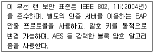
- WLAN
- WEP
- WPA
- WPA2
(정답률: 64%)
60. SET에 대한 설명 중 적절하지 않은 것은?
- 전자결제 시 교환되는 정보의 비밀 보장을 위해 공개키, 비밀키 암호 알고리즘을 사용한다.
- 데이터의 무결성을 확보하고자 전자서명과 해시 알고리즘을 사용한다.
- 주문 정보는 상점의 공개키로, 지불 정보는 은행의 공개키로 암호화한다.
- 지불 정보와 주문 정보는 상점과 은행이 상호 협조하여 모두 볼 수 있도록 구성되어 있다.
(정답률: 63%)
4과목: 정보 보안 일반
61. 다음 설명 중 옳지 않은 것은?
- 평문을 일정한 단위로 나누어서 각 단위마다 암호화 과정을 수행하여 블록 단위로 암호문을 얻는 대칭암호화 방식이다.
- Electronic Code Book Mode, Output FeedBack Mode는 블록암호의 운용모드이다.
- AES,SEED 등은 블록 크기로 128 비트를 사용한다.
- SPN 구조를 사용하는 알고리즘은 DES이다.
(정답률: 57%)
62. 보기의 ㉠, ㉡이 설명하는 대칭키 암호 알고리즘의 동작모드는?
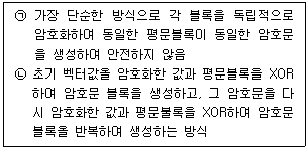
- ㉠ CFB, ㉡ CBC
- ㉠ CFB, ㉡ OFB
- ㉠ ECB, ㉡ CFB
- ㉠ ECB, ㉡ OFB
(정답률: 44%)
63. 스트림 암호 방식의 블록 암호 모드들로만 구성된 것은?
- ECB, CBC, CTR
- CFB, OFB, CTR
- CBC, CFB, OFB
- ECB, CFB, CTR
(정답률: 46%)
64. 암호 공격 유형에 대한 설명 중 적절하지 못한 것은?
- 선택 암호문 공격(Chosen-Ciphertext Attack) : 공격자가 선택한 암호문에 대한 평문을 얻을 수있다는 가정하에 수행하는 공격법
- 선택 평문 공격(Chosen-Plaintext Attack) : 공격자가 선택한 평문에 대한 키를 얻을 수 있어서 키 암호문의 쌍을 이용하는 공격법
- 기지 평문 공격(Known-Plaintext Attack) : 공격자가 여러가지 암호뿐만 아니라 평문에 대응되는 암호문을 수집하여 암호화에 사용된 키를 찾아내는 공격법
- 암호문 단독 공격(Ciphertext-Only Attack) : 공격자가 여러 평문에 대한 암호문을 수집하여 암호문만으로 평무을 유추하거나 키를 찾아내는 공격법
(정답률: 32%)
65. Diffie-Hellman 키 사전 분배에 대한 내용을 설명한 것이다. ㉠~㉣에 들어가야 할 단어로 옳은 것은?
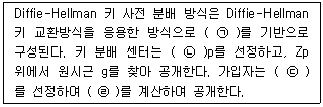
- ㉠ 이산대수문제, ㉡ 큰 정수, ㉢ 공개키, ㉣ 개인키
- ㉠ 이산대수문제, ㉡ 큰 소수, ㉢ 개인키, ㉣ 공개키
- ㉠ 소인수분해문제, ㉡ 큰 정수, ㉢ 개인키, ㉣ 공개기
- ㉠ 소인수분해문제, ㉡ 큰 소수, ㉢ 공개기, ㉣ 개인키
(정답률: 71%)
66. 다음 중 이산대수 기반 암호방식이 아닌 것은?
- Elgamal 암호
- 타원곡선 암호
- DSA 암호
- 라빈(Rabin) 암호
(정답률: 40%)
67. 전자서명에 대한 설명으로 法지 않은 것은?
- 전자문서의 서명은 다른 전자문서의 서명과 항상 동일해야 누구든지 검증할 수 있다.
- 전자서명을 계산하기 위해 송신자는 문서에 대해 해시값을 계산한 후 그 값올 자신의 개인키로 암호화한다.
- 합법적인 서명자만이 전자문서에 대한 전자서명을 생성할 수 있어야 한다.
- 어떠한 문서에 대해서도 서명의 위조가 불가능하며, 서명한 문서의 내용은 변경될 수 없어야 한다.
(정답률: 46%)
68. 은닉서명에 대한 바른 설영은?
- 송신자와 수신자 간에 문서의 위변조를 방지하기 위하 방법이다.
- 은닉서명 사용자가 서명자에게 자신의 메시지를 보여주지 않고 서명을 받아내는 방식이다.
- 은닉서명을 위한 서명자의 신원은 노출되지 않고, 은닉서명 사용자는 노출될 수 있는 서명 방식이다.
- 전자화폐 사용 시, 전자화폐 수신자의 신원 노출 방지 기능이 있다.
(정답률: 45%)
69. 보기에서 설명하는 ㉠ ~ ㉢에 적합한 접근통제 방법은?
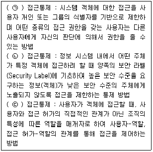
- ㉠ 강제적, ㉡ 임의적, ㉢ 역할기반
- ㉠ 강제적, ㉡ 역할기반, ㉢ 임의적
- ㉠ 임의적, ㉡ 역할기반, ㉢ 강제적
- ㉠ 임의적, ㉡ 강제적, ㉢ 역할기반
(정답률: 77%)
70. One Time Pad에 대한 설명 중 옳지 않은 것은?
- 최소한 평문 메시지 길이와 같은 키 스트림을 생성해야 한다.
- 암호화 키와 복호화 키가 동일하다.
- One Time Pad 암호를 사용하려면 키 배송이 먼저 이루어져야 한다.
- 전사 공격을 받게 되면 시간이 문제인지 궁극적으로 해독된다.
(정답률: 40%)
71. 다음 지문이 설명하는 것은?
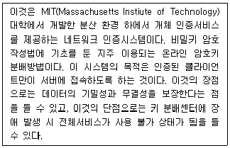
- Diffie-Hellman Protocol
- Kerberos Protocol
- Needham-schroeder Protocol
- SET Protocol
(정답률: 72%)
72. 메시지 인증에 사용하기 위한 해시 함수의 특성 중 약한 충돌 저항성이라고 부르는 해시함수 특성은?
- H(x)는 어떤 x에 대해서도 계산이 쉬워야 하고 H는 일정한 크기의 출력을 생성해야 한다.
- 어떤 주어진 값 h에 대해서 H(x)=h 가 성립하는 x를 찾는 것이 계산적으로 불가능해야 한다.
- 어떤 주어진 블록 x 에 대해서 H(x)=H(y)를 만족하는 y(≠x)를 찾는 것이 계산적으로 불가능 해야 한다.
- H(x)=H(y)를 만족하는 쌍 (x, y)을 찾는 것이 계산적으로 불가능해야 한다.
(정답률: 47%)
73. 다음 지문의 ㉠~㉢에 들어갈 단어로 적절한 것은?
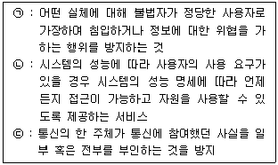
- ㉠ 접근제어, ㉡ 가용성, ㉢ 인증
- ㉠ 접근제어, ㉡ 인증, ㉢ 부인방지
- ㉠ 인증, ㉡ 접근제어, ㉢ 가용성
- ㉠ 인증, ㉡ 가용성, ㉢ 부인방지
(정답률: 60%)
74. 공개키 암호 알고리즘과 비밀키 암호 알고리증에 대한 설명으로 틀린 것온?
- RSA, ElGamal, ECC, Knapsack 암호 알고리즘은 공개 키 알고리즘이다.
- 비밀키 암호 알고리즘 방식은 암호화와 복호화에 동일한 키를 사용한다.
- 대칭키 암호 알고리즘은 스트림 암호 알고림즘과 블록 암호 알고리즘으로 나눌 수 있다.
- 공개키 암호 알고리즘은 비밀키 암호 알고리즘보다 연산 속도가 빠르다.
(정답률: 57%)
75. DES 및 3-DES에 관한 설명으로 잘못된 것은?
- DES의 F-함수는 8개의 S-box로 구성되어 있으며, 각 S-box는 6비트 입력, 4비트 출력을 갖는다.
- DES의 S-box는 모두 선형(Linear) 구조이며 DES의 안전성의 핵심 모듈이다.
- DES의 F-함수의 확장(Expansion)은 입력 32비트를 출력 48비트로 확장하는 과정이다.
- 3-DES는 2개 또는 3개의 서로 다른 키를 이용하여 DES를 반복 적용하는 것이다.
(정답률: 41%)
76. 다음 지문이 설명하는 검증제도는?
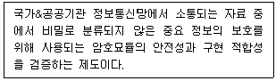
- KCMVP 검중지제도
- V&V 검중재도
- NET 검증제도
- CAVP 감중제도
(정답률: 69%)
77. 다음은 BLP 모맬의 특성을 나타내고 있다. 높은 보안등급과 낮은 보안등급 사이에서 읽기와 쓰기 권한이 바르게 짝지어 진 것은?
- Read-Up 금지, Write-Up 금지
- Read-Down 금지, Write-Up 금지
- Read-Up 금지, Write-Down 금지
- Read-Down 금지, Write-Down 금지
(정답률: 47%)
78. 아래의 대창키 암호 알고리즘 중 Feistel 암호 구조와 SPN 구조끼리 올바르게 묶인 것은?
- (DES. SEED) : (AES. ARIA)
- (DES. ARIA) : (AES. SEED)
- (DES. AES) : (SEED. ARIA)
- (DES) : (SEED. AES. ARIA)
(정답률: 45%)
79. 보기 지문의 ㉠, ㉡ 에 적절한 것은?
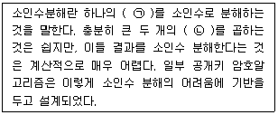
- ㉠ 정수, ㉡ 소수
- ㉠ 정수, ㉡ 대수
- ㉠ 실수, ㉡ 소수
- ㉠ 실수, ㉡ 대수
(정답률: 66%)
80. 국내 암호모듈 검증에 있어 검증대상 암호알고리즘으로 지정된 비밀키 &블록암호 알고리즘으로 구성된 것은?
- ㉠ AES, ㉡ LEA, ㉢ SEED
- ㉠ AES, ㉡ LEA, ㉢ ARIA
- ㉠ ARIA, ㉡ SEED, ㉢ LEA
- ㉠ ARIA, ㉡ SEED, ㉢ AES
(정답률: 47%)
5과목: 정보보안 관리 및 법규
81. 보안의 특정요소에 관한 설명이다. ( )에 들어갈 암호에 적정한 것은?
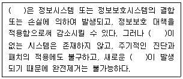
- 취약점
- 위협
- 위험
- 침해
(정답률: 58%)
82. 다음 중 업무연속성계획의 접근 방법론 절차에 포함되지 않는 것은?
- 사업영향평가
- 복구전략 개발
- 프로젝트의 수행 테스트 및 유지보수
- 교정 통제 및 잔류 위험 분석
(정답률: 28%)
83. 다음 ( )안에 들어갈 내용으로 맞는 것은?
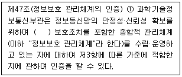
- 관리적 • 기술적 • 물리적
- 위험 분석적
- 기밀성 • 무결성 • 가용성
- 지속적 • 구조적 • 탄력적
(정답률: 58%)
84. 업무영향분석 시 고려해야 할 내용으로 가장 거리가 먼 것은?
- 복구 정확성, 비상시 의무사항 수행, 대체 백업 사이트의 처리 역량 검증
- 사건 발생 이후 시간이 경과함에 따라 손해 혹은 손실이 점증되는 정도
- 최소한의 운영에 필요한 직원, 시설, 서비스를 복구하는데 소요되는 시간
- 수입상실, 추가적 비용부담, 신용상실 등과 같은 형태의 손실
(정답률: 12%)
85. 정량적 위험분석 기법에 해당하는 것은?
- 델파이법
- 시나리오법
- 순위결정법
- 확률분포법
(정답률: 48%)
86. 다음 보기의 ㉠, ㉡에 들어가야 할 단어로 적합한 것은?
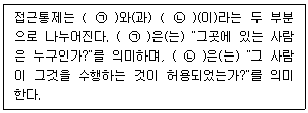
- ㉠ 보안, ㉡ 승인
- ㉠ 배치, ㉡ 허가
- ㉠ 인증, ㉡ 인가
- ㉠ 검토, ㉡ 확인
(정답률: 68%)
87. 개인정보보호법과 연관성이 가장 적은 것은?
- 개인정보의 수집, 이용, 제공 등 단계별 보호기준
- 공인인증기관의 지정 및 보호기준
- 영상정보처리기기의 설치&운영 제한
- 고유식별정보의 처리 제한
(정답률: 25%)
88. 정보보호정책 수립 시에 정보보호 목표를 선정함에 있어 고려해야 할 사항으로 적절하지 않은 것은?
- 사용자에게 제공하는 서비스의 이점이 위협의 비중보다 크다면 정보보호관리자는 사용자들이 위험으로부터 서비스를 안전하게 사용할 수 있도록 보호대책을 수립하여야 한다.
- 누구나 쉽게 시스템에 접근하여 사용할 수 있다면 사용하기에 편리할 수 있도록 하여야 한다. 다만 각종위협으로부터 완전히 노출되어 있이서 정보보호관리자는 시스템의 안전성을 고려하는 것보다는 시스템 사용의 용이성을 최우선과제로 선정해야한다.
- 정보보호정책의 적용 영역은 정보기술 , 저장된 정보, 기술에 의해 조직된 정보의 모든 형태를 포함한다.
- 정보보호를 하기 위해서는 비용이 많이 소요되므로 프라이버시 침해에 따른 손실, 서비스 침해에 따른 손실 등을 고려하여 신중하게 결정해야 한다.
(정답률: 62%)
89. 위험분석 방법론으로 적절히 짝지은 것은?
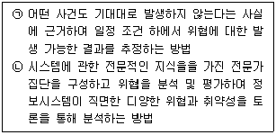
- ㉠ 확률분포법, ㉡ 순위결정법
- ㉠ 시나리오법, ㉡ 델파이법
- ㉠ 델파이법, ㉡ 확률분포법
- ㉠ 순위결정법, ㉡ 시나리오법
(정답률: 65%)
90. 개인정보영향평가 시 반드시 고려할 사항이 아닌 것은?
- 처리하는 개인정보의 수
- 개인정보 취급자의 인가 여부
- 개인정보의 제3자 제공 여부
- 정보주체의 권리를 해할 가능성 및 그 위협
(정답률: 39%)
91. 주요 정보S신기반시설에 대한 취약점 분석 평가를 수행할 수 있는 기관이 아닌 것은?
- 한국인터넷진흥원
- 정보보호 전문서비스 기업
- 한국전자통신연구원
- 한국정보화진홍원
(정답률: 29%)
92. 개인정보보호법에서 정의하는 개인정보을 수집할 경우에 해당되지 않는 것은?
- 정보주체의 동의을 받는 경우
- 법률에 특별한 규정이 있거나 법령상 의무를 준수하기 위하여 불가피한 경우
- 정보주체와의 계약의 체결 및 이행을 위하여 불가피하게 필요한 경우
- 정보주체의 정당한 이익을 달성하기 위하여 필요한 경우로서 명백하게 개인정보처리자의 권리보다 우선하는 경우
(정답률: 50%)
93. 다음 지문이 설명하는 인증제도는?
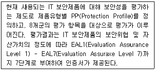
- CC(Common Criteria)
- ITSEC
- BS7799
- ISMS
(정답률: 53%)
94. "개인정보 보호법"에서 개인정보의 파기 및 보존 시 가장 적절하지 않은 경우는?
- 개인정보의 이용목적이 달성될 때에는 즉시 파기하여야 한다.
- 개인정보 삭제 시 만일의 경우에 대비하여 일정기간 보관한다.
- 개인정보를 파기하지 않고 보관할 시에는 다른 개인정보와 분리하여 저장 • 관리한다.
- 전자적 파일 형태인 경우, 복원이 불가능한 방법으로 영구 삭제한다.
(정답률: 60%)
95. 다음 중 공인인증기관이 발급하는 공인인증서에 포함되어야하는 사항이 아닌 것은 무엇인가?
- 가입자의 전자서명검증정보
- 공인인증서 비밀빈호
- 가입자와 공인인증기관이 이용하는 전자서명방식
- 공인인증기관의 명칭 등 공인인증기관을 확인할 수 있는 정보
(정답률: 64%)
96. 전자서명법에서 규정하고 있는 용어에 대한 설명 중 옳지 않은 것은?
- 전자서명 정보는 전자서명 생성정보가 가입자에게 유일하게 속한다는 사실을 확인하고 이를 증명하는 전자적 정보를 말한다.
- 전자서명은 서명자를 확인하고 서명자가 해당 전자문서에 서명하였음을 나타내는 데 이용하기 위하여 전자문서에 첨부되거나 논리적으로 결합된 전자적 형태의 정보를 말한다.
- 인증은 전자서명 생성정보가 가입자에게 유일하게 속한다는 사실을 확인하고 이를 증명하는 행위를 말한다.
- 전자문서는 정보 처리 시스템에 의하여 전자적 형태로 작성되어 송신 또는 수신되거나 저장된 정보를 말한다.
(정답률: 28%)
97. 다음 중 아래에 대한 설명으로 가장 적합한 것은7
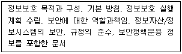
- 위험분석서
- 정보보호정책서
- 업무연속성계획서
- 업무영향평가서
(정답률: 61%)
98. 다음 업무 연속성 계획을 개발하는데 요구되는 다섯단계를 차례로 나열한 것은?
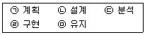
- ㉠-㉡-㉢-㉣-㉤
- ㉠-㉡-㉣-㉢-㉤
- ㉠-㉢-㉣-㉡-㉤
- ㉠-㉢-㉡-㉣-㉤
(정답률: 36%)
99. 개인정보의 안정성 확보조치 기준(고시)의 제7조(개인정보의 암호화)에 따라 반드시 암호화하여 저장해야하는 개인정보가 아닌 것은?
- 비밀전호
- 고유식별번호
- 바이오 정보
- 전화번호
(정답률: 66%)
100. 아래 내용에 대한 설명으로 가장 적합한 것은?
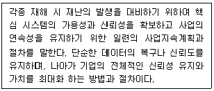
- 위험분석
- 사업영향평가
- 업무연속싱계획
- 재난복구계획
(정답률: 10%)